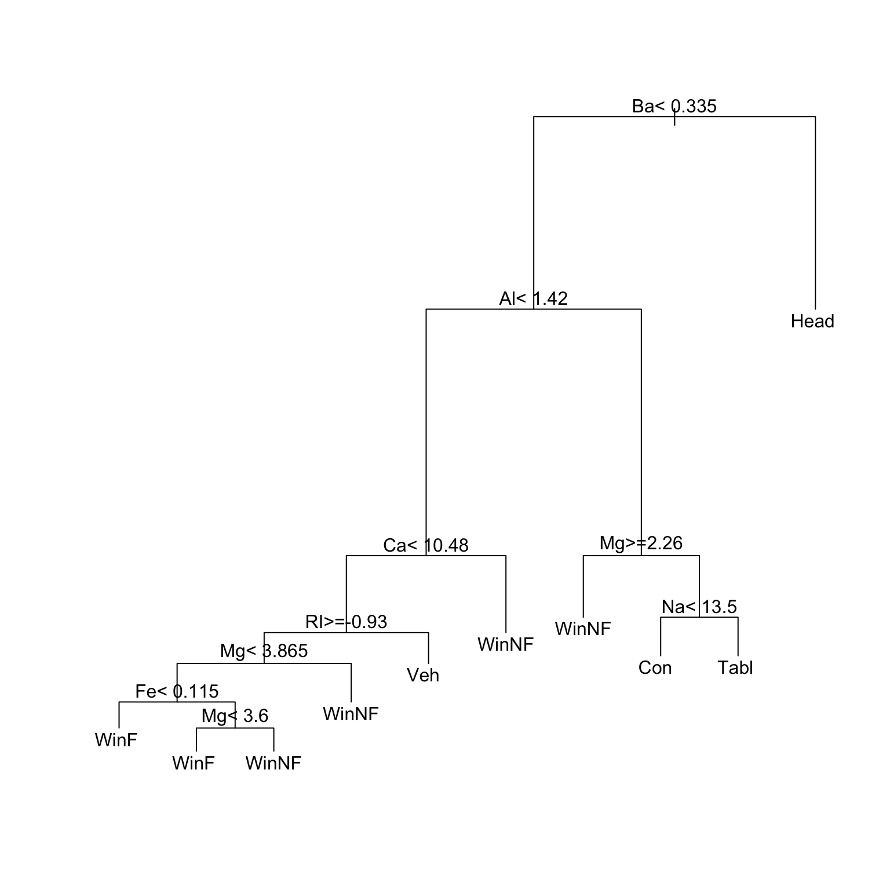

6 Tree-based models
6.1 Decision Tree models (Tree-based models)
Tree-based classification, as for example implemented in the rpart (recursive partitioning) package, can be used for multivariate supervised classification (discrimination) or for tree-based regression. Tree-based methods are in general more suited to binary regression and classification than to regression with an ordinal or continuous dependent variable.
Such “Classification and Regression Trees” (CART), may be suitable for regression and classification problems when there are extensive data. An advantage of such methods is that they automatically handle non-linearity and interactions. Output includes a “decision tree” that is immediately useful for prediction. The MASS:fgl glass fragment data will be used for an example. If high levels of accuracy are important and obtaining a single decision tree is not a priority, the ‘’random forests’’ approach that will be described below is usually to be preferred.
Figure 6.1 shows an initial tree, before pruning.

type for the forensic glass data.Code is:
library(rpart)
fgl <- MASS::fgl
set.seed(31) ## Use to reproduce output shown.
# Use fgl: Forensic glass fragment data; from MASS package
glass.tree <- rpart(type ~ RI+Na+Mg+Al+Si+K+Ca+Ba+Fe, data=fgl)
plot(glass.tree); text(glass.tree)Now check how cross-validated predictive accuracy changes with the number of splits. The column xerror is the one to check. Error values must be multiplied by the root node error to get an absolute error value.
printcp(glass.tree, digits=3)
Classification tree:
rpart(formula = type ~ RI + Na + Mg + Al + Si + K + Ca + Ba +
Fe, data = fgl)
Variables actually used in tree construction:
[1] Al Ba Ca Fe Mg Na RI
Root node error: 138/214 = 0.645
n= 214
CP nsplit rel error xerror xstd
1 0.2065 0 1.000 1.043 0.0497
2 0.0725 2 0.587 0.601 0.0517
3 0.0580 3 0.514 0.572 0.0512
4 0.0362 4 0.457 0.493 0.0494
5 0.0326 5 0.420 0.507 0.0497
6 0.0109 7 0.355 0.464 0.0485
7 0.0100 9 0.333 0.471 0.0487The optimum number of splits, as indicated by this output (this may change from one run to the next) is 7. The function prune() should be used to prune the splits back to this number. For this purpose, set cp to a value between that for nsplit=7 and that for nsplit=5.
printcp(prune(glass.tree, cp = 0.011))
Classification tree:
rpart(formula = type ~ RI + Na + Mg + Al + Si + K + Ca + Ba +
Fe, data = fgl)
Variables actually used in tree construction:
[1] Al Ba Ca Mg Na RI
Root node error: 138/214 = 0.64486
n= 214
CP nsplit rel error xerror xstd
1 0.206522 0 1.00000 1.04348 0.049733
2 0.072464 2 0.58696 0.60145 0.051652
3 0.057971 3 0.51449 0.57246 0.051156
4 0.036232 4 0.45652 0.49275 0.049357
5 0.032609 5 0.42029 0.50725 0.049733
6 0.011000 7 0.35507 0.46377 0.048534To use single tree methods effectively, one needs to be familiar with approaches for such pruning, involving the use of cross-validation to obtain error estimates. Methods for reduction of tree complexity that are based on significance tests at each individual node (i.e. branching point) typically choose trees that over-predict.
6.1.1 The random forests approach
The random forests approach, implemented in the randomForests package, involves generating trees for repeated bootstrap samples (by default, 500) from the data, with data that is excluded from the bootstrap sample used to make, in each case, a prediction for that tree. The final prediction is based on a vote over all trees This is simplest for classification trees. The stopping criterion for individual trees is, unlike the case for single tree methods, not of great importance. Predictive accuracy is typically much better than for single tree methods.
6.2 Exercises
The
MASS::Aids2dataset contains de-identified data on the survival status of patients diagnosed with AIDS before July 1 1991. Use tree-based classification (rpart()) to identify major influences on survival.Compare the effectiveness of
rpart()with that ofrandomForest(), for discriminating between plagiotropic and orthotropic species in the data setDAAG::leafshape.
6.3 References and reading
See the vignettes that accompany the rpart package.
Liaw and Wiener (2002) . Classification and Regression by randomForest. R News.
Maindonald and Braun (2010) . Data Analysis and Graphics Using R –- An Example-Based Approach. Cambridge University Press.
Maindonald, Braun, and Andrews (2024, forthcoming) . A Practical Guide to Data Analysis Using R. An Example-Based Approach. Cambridge University Press.